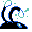

#166
Chinchou
WaterElectric
On ocean floors, it flashes both lights to hunt for prey in the deep, dark sea
Base stats Total 274
HP75
Attack38
Defense38
Speed67
Special56
Details
- Species
- Anchor
- Height
- 1'08"
- Weight
- 26.5 lb
- Catch rate
- 190
- Base exp
- 88
- Growth
- Slow
Level-up moves
LevelMoveType
StartBubblebeamWater
StartThundershockElectric
Lv 6ThundershockElectric
Lv 13BubblebeamWater
Lv 20Thunder WaveElectric
Lv 27ThunderboltElectric
Evolution
TM / HM
TM06 ToxicTM08 Body SlamTM09 Take DownTM10 Double-EdgeTM11 BubblebeamTM12 Water GunTM13 Ice BeamTM14 BlizzardTM24 ThunderboltTM25 ThunderTM31 MimicTM32 Double TeamTM44 RestTM45 Thunder WaveTM50 SubstituteHM03 SurfHM05 Flash